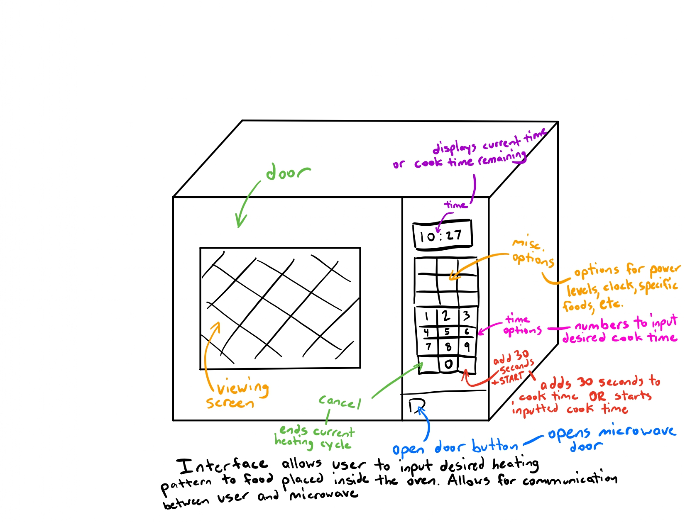
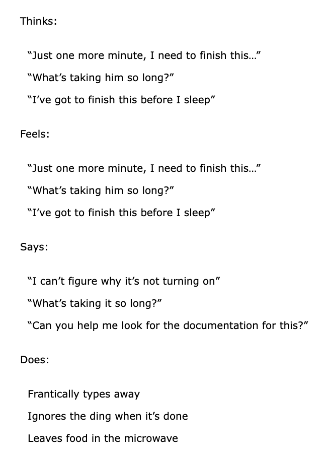
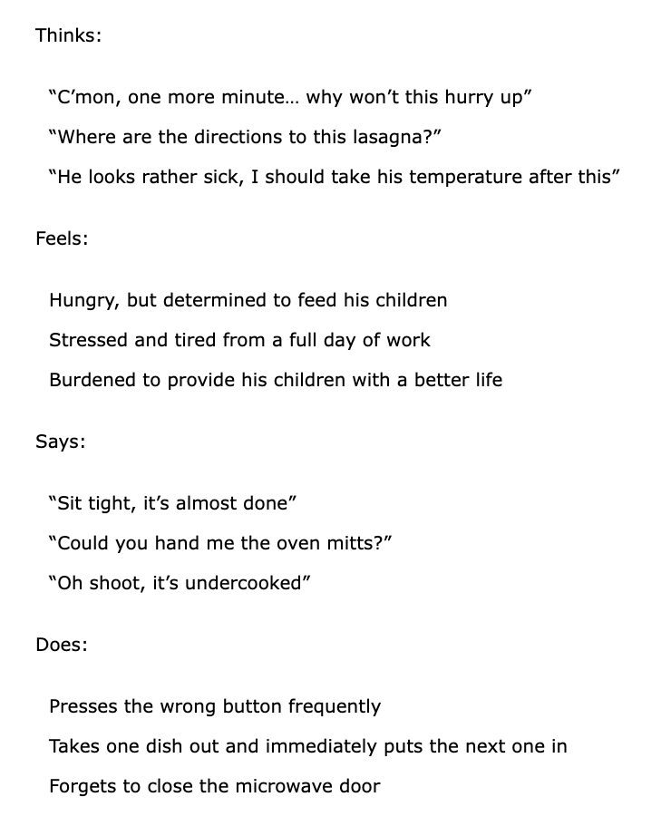
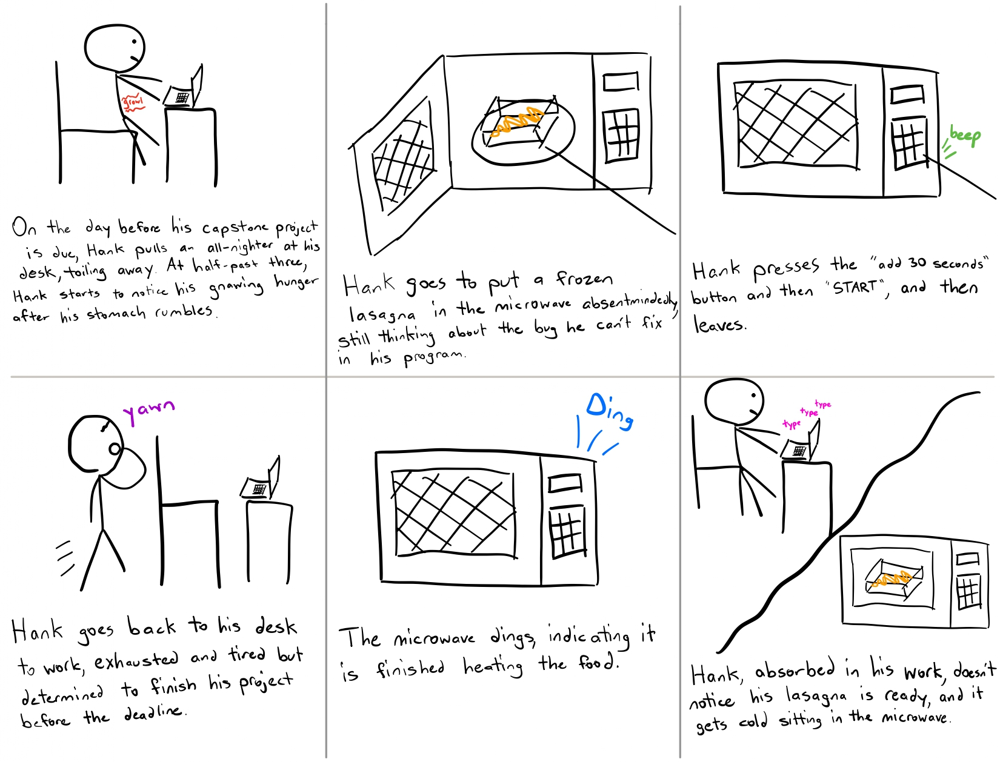

Personas
User interviews and storyboarding | Spring 2024
All products are created to solve a problem… but how do we identify a problem and design for it in the first place?
The answer lies in the users.
We must first empathize with and understand users and their pain points before we can propose any product or design to solve said problem.
We must step into the shoes of different types of users and understand their needs.
This project aims to:
1) observe real users interacting with an interface,
2) interview these individuals about their experiences,
3) create personas based on these users, and
4) illustrate a storyboard for one of the personas.
Preparation
For the first part of the assignment, I observed and interviewed people while they were interacting with an interface, also
known as contextual inquiry. With a microwave as my interface, I created interview questions and conducted interviews.

Part 1: Observation
I silently observed 3 people using the microwave, paying careful attention to how they use the microwave and making objective observations
about their actions.
Person 1:
- Presses start button a lot, multiple times even though microwave already started
- Uses with relative ease, easily finds right button (number to press)
- Doesn’t come pick up food when done
Person 2:
- Opens door, leaves it open while pouring milk
- Presses one minute button before adding 30 seconds
- Doesn’t use start button, so microwave starts while still adding time
- Stands by microwave while waiting for milk to heat
- Presses cancel button
Person 3:
- Hand hovers over back and forth between buttons
- Then pressed a lot of buttons
- Eventually reset to starting point
- Difficulty finding start button
- First set cook time, power level, then press start
- Pressed cancel button
- Cleared pretty quickly
- Set clock on microwave relatively quickly in contrast
Part 2: Interviews
After observing the 3 people, I conducted interviews with them regarding their experience. I prepared questions soliciting insight about their
expectations, experience, motives, and challenges using the interface.
- How do you rate the ease of use with the microwave on a scale of 1-6 with 1 being the hardest to use/understand and 6 being the easiest? Why?
- All answered 5. The buttons are worn down, so it’s hard to read the labels. Microwave beeps too many times when it’s finished. Didn’t know you could add 4 minutes directly
- Only know how to use one button, the “add 30 seconds” button. There are marks on the button from other people using it many times, and so it’s easy to know which button to press
- Is there anything you liked about the interface?
- The “add 30 seconds” button is useful
- Everything’s clearly labeled (except the buttons that are worn out)
- Did you have any difficulties with the interface?
- Finger marks help to distinguish which buttons to press. Maybe if they weren’t there, it would be more difficult to know what to do to make it work
- Difficult reading the buttons with worn labels
- Is there anything you wish the interface had that would make it easier to use/interact with?
- Very pronounced add 30 seconds button.
- Ability to pre-save one-and-a-half-minute cook time because often used
- Was the product navigation as you expected?
- Yes
- It adds 30 seconds when the “add 30 seconds” button is pressed
Main accessibility issue: Overused buttons have the plastic fraying, making it hard to see what the labels say. This may make the microwave harder to use for first-time/infrequent users
Part 3: Personas
In the third part of this project, I used data collected from my observations and interviews and used it to create two personas. The personas were based
on overarching trends I observed amongst all the users I interviewed, as opposed to characteristics from a specific individual. Each persona consisted of
a four-quadrant empathy map, describing what users think, feel, say, and do.
Figure 1: Hungry Hank is a famished college senior studying biomedical engineering. He’s rushing to finish his capstone project with his team on a snowy day where they cannot meet in-person. Hank lives off frozen food in his fridge, so he heavily relies on microwaves to heat his food. However, Hank is constantly in a rush, and he mindlessly uses the microwave. More focused on his schoolwork at hand, Hank doesn’t always pay the closest attention to the controls of the microwave interface or stand by to wait for his food to heat.

Figure 2: Rordon Gamsay is a single father of two with two full-time jobs, trying his best to support his family. Rordon rushes home every night to pick up his children from childcare and prepare dinner for them. With his hectic schedule, Rordon rarely has time to prepare a proper meal in time, and instead frequently uses the microwave for everything. Because of this, Rordon’s microwave is quite beat up, and it is hard to see what the buttons say anymore.

Analyzing these two personas, they primarily differ in age and stage of life. Rordon Gamsay, as an adult with dependents, has needs beside his own to look out
for, while Hank’s direction in life is primarily goal-oriented towards personal achievement.
Part 4: Storyboard
The last part consisted of creating a storyboard for one of the personas. The aim was to present authenticity, emotion, and simplicity in
the persona's user journey from start to end, reflecting the goals of the persona and including all necessary steps for using the microwave.
Figure 3: Hungry Hank storyboard

Takeaways
Much thought goes into the small things we use in life--be it microwaves, faucets, ATMs, shower handles, doors, buttons, or
light switches, or kiosks. If so much thought goes into the small things, how much more does it take for the complex internet-related
technologies we rely on in our day-to-day livelihoods for work, play, and everything in between? Design can make or break the difference;
poor design can make the difference between a multi-billion dollar success story or another startup failure. Much thought must be put into
the relationship between the human mind and the interface; no matter how sophisticated, powerful, or successful a system is, poor design
can negate it all.